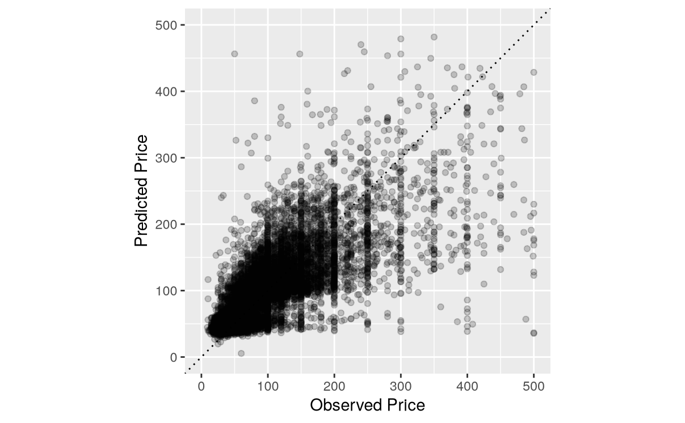
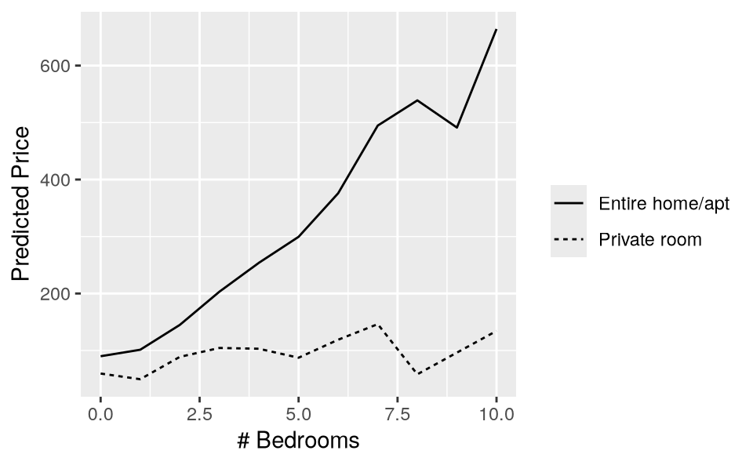
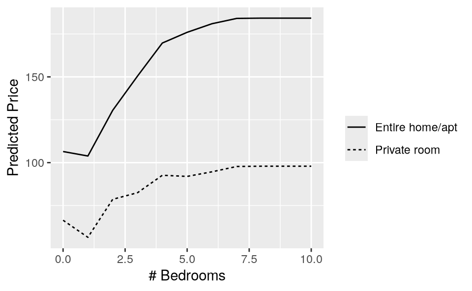

13 机器学习
从模型到意义 - 中文翻译
来源：Vincent Arel-Bundock，Model to Meaning: How to Interpret Statistical Models in R and Python - Chapter 13 Machine learning。 来源说明：截至 2026-09-19，修订版 870f15a0 的公共代码仓库不包含本章完整的 .qmd 源文件。本页面根据同日下载的公开 HTML 快照翻译而成。因此，R/Python 代码和图形均以静态形式展示；上游代码未在本网站重新执行。 网站文本 (C) 2025 Vincent Arel-Bundock，保留所有权利；marginaleffects 软件代码依据 GPL-3 许可。 本页面为中文翻译，并非原文；其翻译和发布依据本 Notes 网站所采用的授权声明。
前几章介绍的概念和事后估计工具——预测、反事实比较和斜率——大体上与模型无关；它们既适用于统计方法，也适用于机器学习方法。这些工具对于模型描述尤其有效；在机器学习应用中，这项任务非常重要，因为分析人员需要审计模型，并理解模型如何响应不同的输入。1
审计和描述机器学习模型对于确保预测保持公平，并确保预测由符合领域专家实质性知识的因素驱动至关重要。例如，在信用评分系统中，评估申请人的特征——如收入、就业状态或种族——的变化如何影响信用度评估，有助于发现并减轻潜在偏差。同样，在招聘算法中，了解模型如何对候选人的不同属性——如教育程度或工作年限——赋予权重，可以帮助招聘人员在决策中使用模型。审计和模型描述对于提高数据分析的透明度和可解释性至关重要。
13.1 tidymodels 和 mlr3
marginaleffects 软件包通过允许分析人员计算并可视化预测、反事实比较和斜率，促进了模型描述与审计。它与 R 中一些最重要的机器学习框架（tidymodels 和 mlr3）以及 Python（Scikit Learn）无缝集成。
tidymodels 是 R 中按照 tidyverse 原则进行建模和机器学习的一组软件包，为数据预处理、建模和验证提供了统一的接口（Kuhn and Wickham 2020）。mlr3 是 R 中一个现代的面向对象框架，提供了一套全面的机器学习工具，包括各种算法、重抽样方法和性能度量（Lang et al. 2019）。通过同时支持 tidymodels 和 mlr3，marginaleffects 使用户能够解释各种机器学习模型。Scikit Learn 是一个功能强大的 Python 机器学习软件库，为数据挖掘和数据分析提供简单而高效的工具（Pedregosa et al. 2011）。
对机器学习的一般性介绍或对特定框架的介绍超出本书范围。2 相反，本章展示一个非常简单的例子，以说明前几章建立的工作流如何直接应用到这一新情境中。
我们考虑由 Békés 和 Kézdi 收集并发布的伦敦 Airbnb 出租房源数据（2021）。该数据集包含超过 50,000 个单元的信息，包括单元类型（单间或整套单元）、卧室数量、停车位或互联网接入等特征。我们分析的主要结果变量是每个单元的租赁 price。
首先，我们加载 tidymodels 和 marginaleffects 库，读取数据，并显示前几行和前几列。
library(tidymodels)
library(marginaleffects)
set.seed(48103)
airbnb = get_dataset("airbnb")
airbnb[1:5, 1:6]
price bathrooms bedrooms beds unit_type 24-hour check-in
1 23 1.0 1 1 Private room 0
2 50 1.0 1 1 Private room 0
3 24 1.0 1 1 Private room 0
4 50 1.5 1 1 Private room 1
5 25 1.0 1 1 Private room 0airbnb 数据集包含 55 列和 52717 行。我们将这些行划分为训练集，用于拟合模型；测试集则用于进行预测并评估模型的行为。
airbnb_split = initial_split(airbnb)
train = training(airbnb_split)
test = testing(airbnb_split)
下面的代码块包含核心的 tidymodels 拟合命令。boost_tree() 函数指定模型类型。在此例中，我们使用提升树的 XGBoost 实现来预测连续结果变量（即“回归”）。如果用户偏好其他预测算法，可以将这一行替换为 linear_reg()、rand_forest()、bart() 等。recipe() 函数标识结果变量（price），并启动一个数据预处理“配方”，也就是一系列将原始数据转换为适合模型拟合格式的步骤。step_dummy() 用于将分类预测变量转换为虚拟变量。最后，workflow() 函数组合模型和预处理配方，而 fit() 函数将模型拟合到训练数据上。
xgb = boost_tree(mode = "regression", engine = "xgboost")
mod = recipe(airbnb, price ~ .) |>
step_dummy(all_nominal_predictors()) |>
workflow(spec = xgb) |>
fit(train)
13.2 预测
有了拟合好的模型后，我们现在使用 predictions() 函数在测试集中生成预测。与往常一样，predictions() 返回一个简单的数据框，其中感兴趣的量位于 estimate 列中，原始数据则位于其他列中。因此，我们可以通过绘制结果变量（estimate）的预测值与实际观测值（price）的对比图，轻松检查测试集中的预测质量。
p = predictions(mod, newdata = test)
ggplot(p, aes(x = price, y = estimate)) +
geom_point(alpha = .2) +
geom_abline(linetype = 3) +
labs(x = "Observed Price", y = "Predicted Price") +
xlim(0, 500) + ylim(0, 500) +
coord_equal()

Figure 13.1 中的每个点代表测试集中的一个出租单元。x 轴显示该单元的观测价格，y 轴显示预测价格。对角线上的点表示预测正确。对角线周围存在相当大的离散程度，这意味着我们的算法会产生较大的预测误差。
marginaleffects 中的大多数标准函数和参数都可用。例如，要计算测试集中私人房间和整套房源的平均预测价格，我们使用带有 by 参数的 avg_predictions()。3
avg_predictions(mod,
by = "unit_type",
newdata = test)
|—————–|———-|
不出所料，我们的模型预期，平均而言，整套房源应比私人房间更昂贵。
13.2.1 部分依赖图
部分依赖图（PDP）是一种可视化预测如何随某些预测变量变化的策略。它在某个预测变量的一系列取值上计算预测，并对其他变量取平均，从而展示结果如何随某个特征的变化而变化。这对于理解复杂模型很有帮助。
marginaleffects 软件包中的 plot_predictions() 函数简化了此类图形的创建。下面的命令计算 bedrooms 和 unit_type 每种组合的平均预测结果，并绘制这些结果。
plot_predictions(mod,
by = c("bedrooms", "unit_type"),
newdata = airbnb) +
labs(x = "# Bedrooms", y = "Predicted Price", linetype = "")

Figure 13.2 中的图形在实质上是合理的。一方面，随着单元总卧室数增加，单间私人房间的价格实际上并没有变化。另一方面，整套单元的租赁价格会随着卧室数量增加而上升。
在某些情境下，分析人员更倾向于基于反事实网格绘制部分依赖图。4 这里的思路是，针对焦点变量的每种取值组合，将整个数据集复制一次。然后，我们在这个反事实网格上进行预测，并对预测取平均值。这种反事实方法确保每种预测变量组合的边际化协变量分布都相同。由此得到的图形可以解释为展示“其他条件相同”时的预测。
要绘制这类部分依赖图，我们首先构建一个反事实网格。如果数据非常庞大，为创建反事实版本而多次复制数据集可能需要大量内存。为避免这一问题，我们根据数据集中的 10,000 行随机子集构建网格。
set.seed(48103)
airbnb_subset = airbnb[sample(1:nrow(airbnb), 10000), ]
grid = datagrid(
bedrooms = unique,
unit_type = unique,
newdata = airbnb_subset,
grid_type = "counterfactual")
plot_predictions(mod,
newdata = grid,
by = c("bedrooms", "unit_type")) +
labs(x = "# Bedrooms", y = "Predicted Price", linetype = "")

13.3 反事实比较
如同Chapter 6 中所述，我们可以使用 avg_comparisons() 函数回答反事实问题，例如：在保持所有其他变量不变的情况下，将卧室数量增加 2 间，预测价格平均会如何变化？
avg_comparisons(mod,
variables = list(bedrooms = 2),
newdata = airbnb)
|———-|
我们的模型预测，一套多出两间卧室的单元，其价格将高出 27 英镑。此外，我们还可以询问以下联合效应：将卧室数量增加一间，并将一套没有无线互联网接入的公寓转变为有无线互联网接入的公寓。为此，我们使用 cross 参数。
avg_comparisons(mod,
variables = c("bedrooms", "Wireless Internet"),
cross = TRUE,
newdata = airbnb)
|————-|———————-|———-|
平均而言，为出租单元增加一间卧室和无线互联网接入，会使预期价格提高 15。
总之，将机器学习模型与 marginaleffects 等工具相结合，可以更深入地理解和解释复杂模型。通过利用预测、反事实比较和部分依赖图，分析人员可以洞察模型行为，并确保预测与领域知识一致。这种方法不仅提高了模型透明度，还有助于基于模型输出做出知情决策。
Békés, Gábor, and Gábor Kézdi. 2021. Data Analysis for Business, Economics, and Policy. Cambridge University Press. https://www.gabors-data-analysis.com. Bischl, Bernd, Raphael Sonabend, Lars Kotthoff, and Michel Lang, eds. 2024. Applied Machine Learning Using Mlr3 in r. 1st ed. Chapman; Hall/CRC. James, Gareth, Daniela Witten, Trevor Hastie, and Robert Tibshirani. 2023. An Introduction to Statistical Learning: With Applications in Python. 2023rd ed. Springer Nature. Kuhn, Max, and Julia Silge. 2022. Tidy Modeling with r: A Framework for Modeling in the Tidyverse. 1st ed. O’Reilly Media. Kuhn, Max, and Hadley Wickham. 2020. Tidymodels: A Collection of Packages for Modeling and Machine Learning Using Tidyverse Principles. https://www.tidymodels.org. Lang, Michel, Martin Binder, Jakob Richter, et al. 2019. “mlr3: A Modern Object-Oriented Machine Learning Framework in R.” Journal of Open Source Software, ahead of print, December. https://doi.org/10.21105/joss.01903. Pedregosa, F., G. Varoquaux, A. Gramfort, et al. 2011. “Scikit-Learn: Machine Learning in Python.” Journal of Machine Learning Research 12: 2825–30.